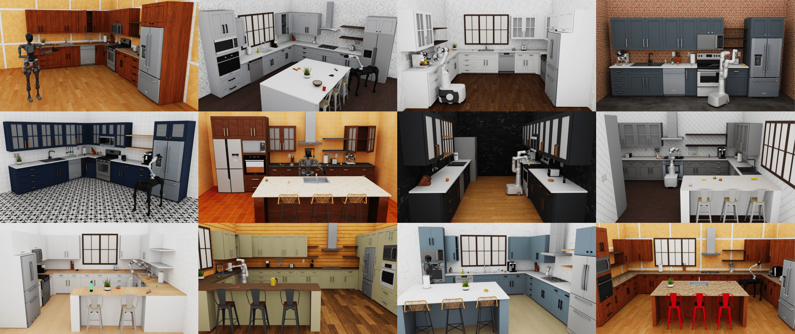

Overview
Contents
Overview¶
RoboCasa is a large-scale simulation framework for training generally capable robots to perform everyday tasks. Four pillars underlie RoboCasa:
Diverse assets, including 120 kitchen scenes and over 2,500 3D objects, created with the aid of generative AI tools
Cross-embodiment support for mobile manipulators and humanoid robots
Diverse tasks created with the guidance of large language models
High-quality human demonstrations in addition to massive robot datasets created with automated trajectory tools

This documentation guide contains information about installation, getting started, and additional use cases such as accessing datasets, policy learning, and API docs.
Citation¶
@inproceedings{robocasa2024,
title={RoboCasa: Large-Scale Simulation of Everyday Tasks for Generalist Robots},
author={Soroush Nasiriany and Abhiram Maddukuri and Lance Zhang and Adeet Parikh and Aaron Lo and Abhishek Joshi and Ajay Mandlekar and Yuke Zhu},
booktitle={Robotics: Science and Systems (RSS)},
year={2024}
}